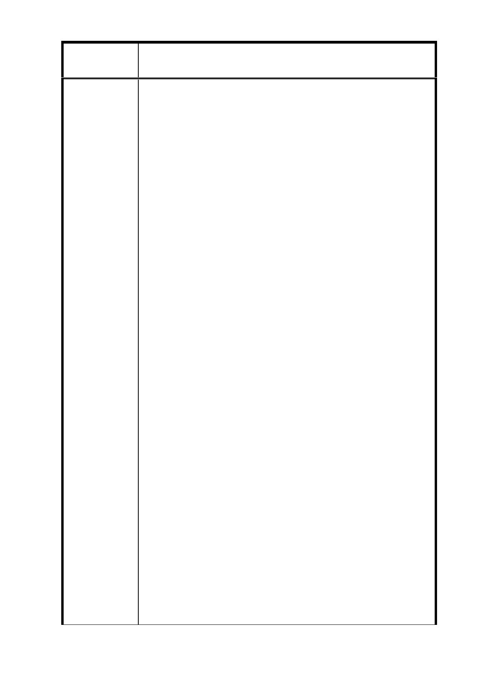

案
名
修訂臺北市信義計畫特定專用區細部計畫(第三次
通盤檢討)案（第二次公告公開展覽）
同之最小基地規模均為 3,000 平方公尺。
2. 本次通盤檢討就本土地所屬 D1 街廓，並未變更最小
基地規模限制，仍維持須為 3,000 平方公尺以上；
然因本土地面積未達 3,000 平方公尺，是以如欲進
行開發，依本次通盤檢討之規定即應併同其他接連
土地，始得為之，復因本土地其他接連土地之地籍
分割零散、所有權人意見龐雜，使陳述人等自 91 年
買受本土地起，持續與鄰地整合迄今長達十二餘年
仍無結果，即本土地整合開發之困境，實與前揭 B7
街廓無異。
3. 惟查，本次通盤檢討僅單就 B7 街廓之最小基地規模
降低為 1,000 平方公尺以上，卻仍維持與 B7 街廓發
展相同且亦面臨整合困難之 D1 街廓最小基地規模為
3,000 平方公尺以上，迺貴府竟未一併瞭解其未開發
之原因，而依個案為差別待遇等情，不僅違反「通
盤檢討」之公益目的，又其區別二者為相異規定之
目的顯無任何合理關聯，逕為無正當理由之差別待
遇，實已違反行政程序法第 6 條之平等原則，貴府
應通盤考量將 D1 街廓之最小基地規模亦降低為
1,000 平方公尺以上，始為適法允當（就此，張桂林
委員亦表示：信義計畫區內尚有未開發地區如 D1、
D3，瞭解其不開發原因為何？本次修訂案調整後對
其影響？並提出更細緻的操作方式。附件八參照）。
4. 復觀諸前揭高雄高等行政法院 91 年度訴字第 602 號
裁定所揭示意旨：「都市計畫通盤檢討應與該區現實
發展情況，以及多數人民之期望相配合，並於通盤
檢討後就必要部分進行變更」等語，可知，貴府都
發局雖曾以「D1 街廓面積達 8000 平方公尺以上，倘
將最小規基地規模修訂為 1000 平方公尺以上，將易
造成該區塊零星開發…」為由，拒絕陳述人請求減
縮最小基地規模之陳情，然現因信義計畫區土地開
發已達 92％以上，僅餘零星土地未能開發，且既貴
府業已針對與 D1 街廓條件相似之 B7 有通盤檢討而
34